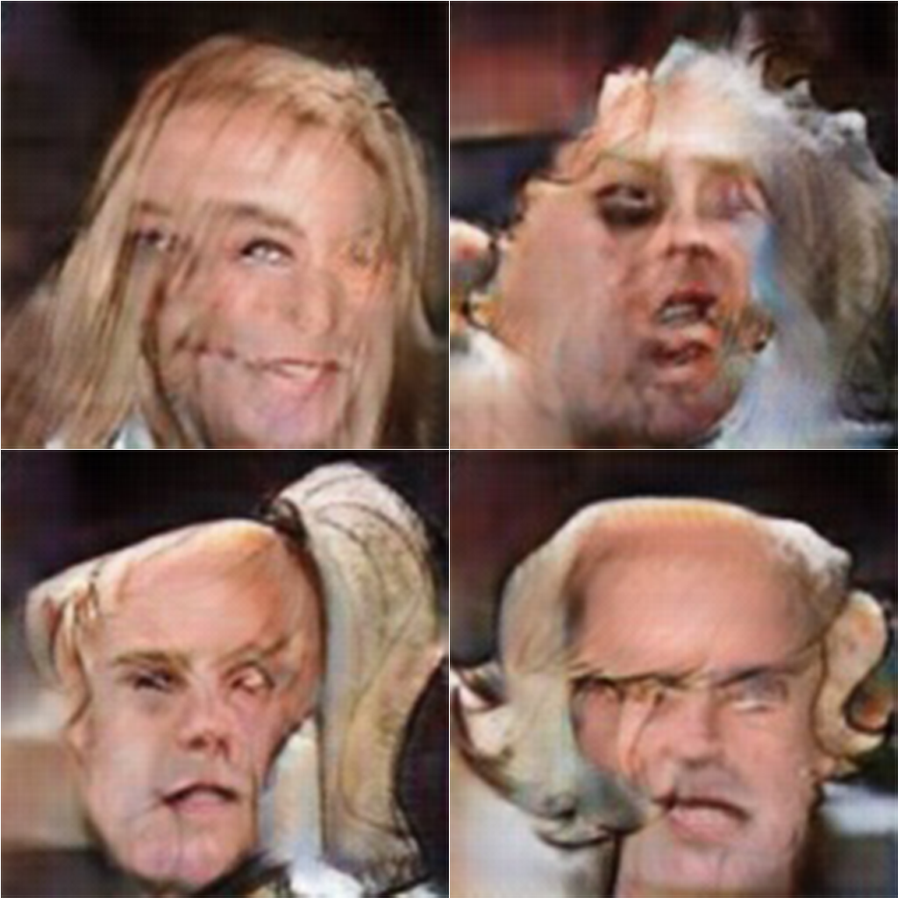

Photo to Drawing
Image to image translation using generative networks
Introduction
Image to image translation have been a hot topic in Deep Learning recently. Not by chance, this topic call attention from specialists and the layman for its incridible results, (a good starting point containing various works are here). Some examples of such translation are:

Those techniques aim to keep the content information from the desired image untouched while having the color and texture changed to the designed style. There are several ways of achieving it with slightly different results. Stills an open question how to decide which result is better, in general it depends of visual inspection or other meassures that are not objective or may not reflect exact the perceived quality.
Objective
For this project, given the time and resources available, we set our objective as: Transfers style from drawing to photograph restricting the set of possible images to faces. This choice was made to re-utilize the CelebA from previous assigments while making it easier to evaluate the results and also the aquisition of the images to form the drawing dataset, as faces drawings are easier to acquire.
Set the main objective, the next steps are:
Implementation
- Define the network archtecture.
- Select a drawing dataset
Investigation
- Dataset quality & quantity
- Archtecture usage and drawbacks
- Tuning and control
Implementation Details
Archtecture and code
The archtecture chosen was the CycleGAN. In the traditional GAN design, given two sets $A$ and $B$, the elements of set $A$ are translated to elements of set B by a generator network, $G(A) \rightarrow B$, while the discriminator network tries to distinguish from the real elements of $B$ and the translated elements $G(A)$, $D(B) \rightarrow 1, D(G(A)) \rightarrow 0$, in a competitive fashion. In this basic design there is no control of which element of $B$ a given element of $A$ will be mapped. The CycleGAN presents a interesting design to overcome this drawback for unpaired datasets. The main idea is to have translations in both directions $G_B(A) \rightarrow B$ and $G_A(B) \rightarrow A$. This enables one to add things that are easy compute in the loss function of those networks, like the cycle consistency, going from $A$ to $B$ and back to $A$ should maps to the same element in $A$, $G_A(G_B(a)) \leftrightarrow a$ and $G_B(G_A(b)) \leftrightarrow b$, and the identity, mapping an element of $A$ in $A$ as $G_A(a) \leftrightarrow a$ and $G_B(b) \leftrightarrow b$. Together those two terms help to preserve characteristics of the original input in the output image.
CycleGAN
This method is classified as a offline fast method, because it's training is made offline and the inference is simple and fast for new images after the training. Neverthless it need two sets $A$ and $B$ to be trained, and the final result from the translation is dependent of the entire set. Other online slow methods, which transfer style between two images may achieve a better stylization of a single image, for obvious reasons, while they need to be trained for each image, hence the "slow" categorization.
The code implementation used was from @aitorzip, which the author describes as a "cleaner and less obscured" implementation of the original CycleGAN, in fact it's a well written and easy to understand code. As a side note, if one plans to run it on windows system you need to add the following line:
if __name__ == '__main__':
to avoid errors from the difference from fork to spawn threads on windows.
Dataset
In the original paper, the authors utilize somewhat small datasets to transfer styles, varying from about $500$ to $6000$ images. Following their usage, usually less images from reference style and more images for the ones to be stylized. From CelebA (celebrity faces) dataset we used all images($202,599$), then reduced to the first $4232$ and after removed some of them ending with $3554$, they were resized/center cropped to $128$x$128$. For the drawings dataset we selected $430$ drawings taken from @pinterest. The drawing images were selected, cropped and treat by hand, and include various artistical styles and strokes, varying from realistic to cartoon/anime and line/filled. A third dataset containing $333$ drawings from Eisaku Kubonouchi were used, with its width scaled to 128 pixels and the height scaled according to keep the aspect ratio.
Original - Cropped and treated
All the images from the first drawing dataset were resized to have the face occupying the $128$x$128$ crop region, the ones who would not cover the entire space were painted to have a background maching with the drawing background, when possible any irrelevant detail, (like pencil, notebook details, etc), were erased. No rotation or meassured aligment were applied to the faces. The original images can be downloaded here, and the cropped from here.
Drawings dataset
The drawings dataset contains various unaligned faces, with varying pose, expression, tonality.
Eisaku dataset
The eisaku dataset was added after various experiments with the others datasets, in this case for the lack of time to hand crop each image, we used the down-scaled image with random crops of $128$x$128$.
CelebA dataset
The CelebA dataset, have all of it's faces aligned (nose point and eyes) and in general front facing and wide smiling with the cheek outlined. Side note: Those characteristics were perceived while training, when the results were biased toward those characteristics.
Experiments
For the following experiments, we have worked iteratively with various parts of the training process, which would help achieving the desired results with the time frame and computational power available:
- CelebA subset size
- Removing "outliers"
- Data augmentation
- Learning rate and epoch
- Effect of different weights of each term in the loss function
- Colored vs Black&White images
Environment
The experiments were made in a notebook with an i7 7700HQ, GTX 1060 6GB and 16GB RAM. The hand crop and treatment of images were made with Photoshop CC 2015, while the automatic resize/crop for other images were made with python OpenCV. The code uses PyTorch and Visdom libraries and can be easily run in the GPU. With the visdom library one can visualize the training process in real time, analyzing the output result of each iteration. When experimenting it's a handful tool.
Experiments Details
For all experiments a liner decay of the learning rate was used, starting from epoch 1. During the training, each 5 epochs the network weights were saved, for posterior comparison. The batch size for all experiments were $2$, which was the maximum we could fit in the GPU memory. The default augmentation in the code was later changed to add rotation, more specifically pad-reflect, rotation and center crop.| # | Set A | Set B | Input CH. | Best Epoch | Approx Iterations | Cycle Loss W. | L. Rate | Augmentation |
|---|---|---|---|---|---|---|---|---|
| 1 | Drawings (430) | CelebA (202,599) | 3 (color) | 2 | ~400k | 7.5 | 0.0002 | H. flip, R. Crop |
| 2 | Drawings (430) | CelebA (4232) | 3 (color) | 20 | 85k | 10.0 | 0.0005 | H. flip, R. Crop, Rotation |
| 3 | Drawings (430) | CelebA (4232) | 3 (color) | 20 | 85k | 15.0 | 0.0002 | H. flip, R. Crop, Rotation |
| 4 | Drawings (430) | CelebA (3554) | 1 (graysacale) | 25 | 105k | 15.0 | 0.0002 | H. flip, R. Crop, Rotation |
| 5 | Drawings (430) | CelebA (3554) | 1 (grayscale) | 20 | 70k | 20.0 | 0.0002 | H. flip, R. Crop, Rotation |
| 6 | Drawings (430) | CelebA (3554) | 1 (grayscale) | 20 | 70k | 25.0 | 0.0002 | H. flip, R. Crop, Rotation |
| 7 | Drawings (430) | CelebA (3554) | 3 (color) | 25 | 70k | 25.0 | 0.0001 | H. flip, R. Crop, Rotation |
Results
Experiment 1

Experiment 2
Experiment 3

Experiment 4
Experiment 5


Experiment 6


Experiment 7

Below are the selected results for comparison. Rustic is from experiment $1$, smooth color from experiment $7$ and smooth BW from experiment $6$.
Original

Detailed viewing of some faces (original, smooth bw, smooth color, rustic):
Face A
Face B
Face C
Parameter analysis
Datasets
Training with relative small datasets can achieve good results. Both datasets need to have a "relation" and be representative. For example, the drawings with oriental style were difficult to be translated in faces, given it's peculiarities, like hair style and big eyes. Another example is undesired patterns in the dataset. The CelebA dataset have it's faces aligned and many of them with wide smiles, when traslating drawings to real faces the network would try to fit a mouth always in the same place, even for perfil drawings. Another tendency was to change a closed mouth to a wide smile. Those examples shows how undesired patterns can be learned from the dataset.
To overcome, or delay the appearing of such patterns, some actions where made: Adding rotations to the augmentation process, removing some wide smiles from the dataset. While those actions helped tho improve the results, they were not sufficient to totally overcome it. So designing a good dataset still important to train with a few images, instead of huge datasets.
Epochs
Most of experiments were run for more epochs than their best epoch result. In general the best looking were found with 20-30 epochs for real to drawing and 25 or less for drawing to real. After those the network still decreases it's error, but the results are not visually good. We believe it's an effect of the undesired patterns in the dataset and overfitting. With a better dataset, the training could probably be run for longer and achieve more detailed images.
Image Channels
In general color images had a slightly better result for the drawings and are much more appealing for the real images, but grayscale images were more stable to variations in the brightness and contrast of the input image.
Learning rate
For the chosen learning rate decay, the learning rate was not much impactfull in the final result, but for the early stages of the training the higher LR would introduce some oscilation in the training.
Cycle Weight
The cycle weight was a key step in controlling the final result. A higher weight would keep more details from the original image. In general the weights for both $G_A$ and $G_B$, $D_A$ and $D_B$ must be equal, if for A and B the weights are different after some epochs the training diverges.
Image Analysis
Painting vs Realistic
The effect of the cycle weight, can be clearly seen for the images below. A heigher weight keeps more from the original image, which we call here painting, while a lower weight tries to translate the image exactly into the another class, yet the end result is not good enough.
Painting
Realistic

fitting of undesired features
An example where the lack of a match between the sets ended in a ugly result is the drawing which are perfil, they could not be match, hence the network tries to reduce the error fitting a face in the most comom position. The same happens with the smile present in the CelebA dataset. After some epochs it's become a pattern which the network tries to match and ends causing artfacts in the mouth of the drawings.
Perfil drawings overfit
Mouth/Smile artifacts
Training past best epoch
From left to right we have the following, 30, 35, 40, 45 and 50 epochs results for the experiment $7$. For the colorization the result tends to saturates and get darker creating some artifacts, while for the drawing it's almost stationary. One important observation is that it holds for the cycle weight of experiment $7$, with lower weights both results keep evolving, usually to less meaningful translations.
Drawing to Real
Real to drawing